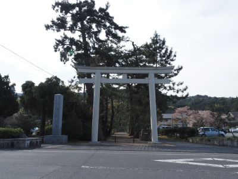
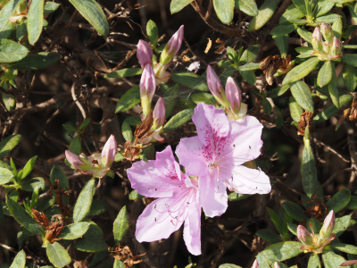
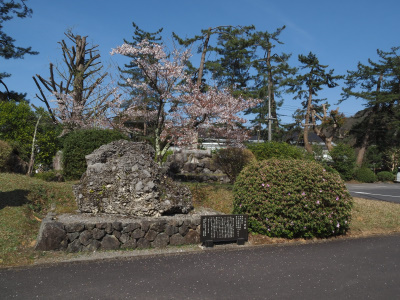
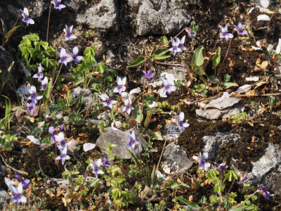
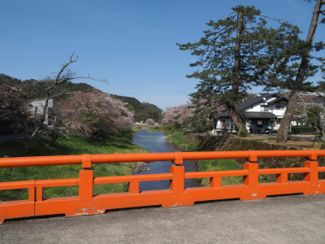
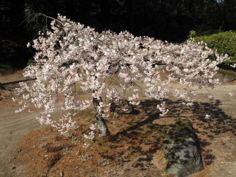
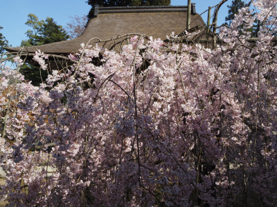
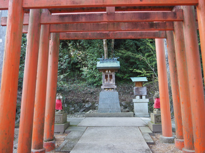
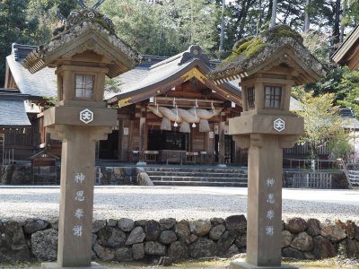

熊野大社の枝垂れ桜が綺麗でした。
2023/04/04

大きな鳥居です。駐車場は鳥居の横にありました。

もうツツジが咲いていました。早いですね。4/4だとは思えない。

大きなさざれ石がありました。

さざれ石には小さなスミレの花が沢山咲いていました。

いい眺めです。

背の低い枝垂れ桜がありました。これくらい小さい桜が家に欲しいと思いましたが、これくらいのサイズの桜を置くスペースはないです。ここに見に行くのが一番いいと思いました。

大きな枝垂れ桜もありました。これもとても綺麗でした。

こういう写真って取るのが難しいですね。なんか鳥居が斜めになっています。

立派な灯篭が並んでいました。
また桜が咲いてる晴れた日に行きたいと思いました。